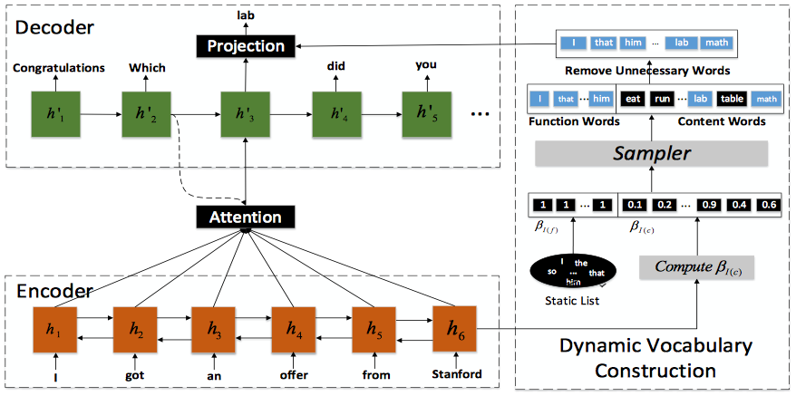

Decoding with Dynamic Vocabularies
Updated:
Using dynamic vocabularies rather than the whole vocabularies(the size can be up to 50k) significantly reduces the costs during decoding. Also, narrowing the candidates by removing totally irrelevant vocabularies should boost model’s performance.
Motivation
To tackle the ‘safe reply’ problem in neural conversation models, there are models using MMI to avoid common responses link, models taking conversation history into consideration, models biasing responses to some specific persona or emotions, models weighting beam search results to get a better response. Yu Wu et al.[1] proposed to factorize the generation probability $p(Y_{i}|X_{i})$ as the product of a vocabulary generation probability conditioned on the input $p(T_{i}|X_{i})$ and a response generation probability conditioned on both the input and the dynamic vocabulary $p(Y_{i}|T_{i},X_{i})$.
$$
p(Y_{i}|X_{i})=p(Y_{i}|T_{i},X_{i})p(T_{i}|X_{i})
$$
Model
The Dynamic Vocabulary Sequence to Sequence (DVS2S) is based on the seq2seq model. The key part is how the dynamic vocabulary is constructed. Let us make this assumption that for each $X_{i}$, Target Vocabulary $T_{i}$ is sampled from a multivariate Bernoulli distribution $(\beta_{i,1} … \beta_{i,|V|}) $ where $\beta_{i,j}$ is the probability of the j-th word being selected to generate the response to $X_{i}$.
Further more, $T_{i}$ can be decomposed to the union of content words $T_{i}^{c}$ and function words $T_{i}^{f}$. Function words guarantee grammatical correctness and fluency of responses. Therefore, $T_{i}^{f}$ should not vary very much. They collect words appearing more than 10 times in the training data, excluding nouns, verbs, adjectives and adverbs from them, and use the remaining ones to form a function word set and make their $\beta = 1$. Content words, on the other hand, express semantics of responses, and thus should be highly related to the input message. For $ \forall c \in T_{i}^{c} $, $ \beta_{I(c)} $ is defined as
$$
\beta_{I(c)} = \sigma(W_{c}h_{t}+b_{c})
$$
where $h_{t}$ is the last hidden state of the encoder.

Objective Function
To allocate a proper $T$ to $X$ is key to the success of DVS2S. To make sure that, they consider jointly learning vocabulary construction and response generation from training data. The Log Likelihood is
$$
L = \sum^{N}_{i=1}\log(\sum_{T_{i}}p(Y_{i}|T_{i},X_{i})p(T_{i}|X_{i}))
$$
The objective function above is difficult to optimize as logarithm is outside the summation. By Jensen’s Inequality, we have
$$
L \ge \sum^{N}_{i=1}\sum_{T_{i}}p(T_{i}|X_{i})\log(p(Y_{i}|T_{i},X_{i}))
$$
Hence, we can instead maximize the lower bound. Note the size of $T_{i}$ is $2^{|V|}$ which means it is impossible to sum over all samples of $T_{i}$. Alternatively, we can employ the Monte Carlo sampling to approximate $T_{i}$. Let’s say we have samples S which leads to
$$
L_{i} = \frac{1}{|S|}\sum_{S}\log(p(Y_{i}|T_{i},X_{i}))
$$
While the computation is feasible $p(T_{i}|X_{i})$ is gone. There is no guide how to update $\beta$s. The trick (at least I think it is a trick) is to rewrite the gradient with respect to all parameters $\Theta$ of L as
$$
\begin{eqnarray}
\frac{dL_{i}(\Theta)}{d\Theta} \\
= \sum_{T_{i}} p(T_{i}|X_{i})\frac{d\log(p(Y_{i}|T_{i},X_{i})}{d\Theta} + \log p(Y_{i}|T_{i},X_{i})\frac{dp(T_{i}|X_{i})}{d\Theta} \\
= \sum_{T_{i}} p(T_{i}|X_{i})\frac{d\log(p(Y_{i}|T_{i},X_{i})}{d\Theta} + p(T_{i}|X_{i}) \log p(Y_{i}|T_{i},X_{i})\frac{d\log p(T_{i}|X_{i})}{d\Theta} \\
= \sum_{T_{i}} p(T_{i}|X_{i})[\frac{d\log(p(Y_{i}|T_{i},X_{i})}{d\Theta} + \log p(Y_{i}|T_{i},X_{i})\frac{d\log p(T_{i}|X_{i})}{d\Theta}]\\
\end{eqnarray}
$$
Now use samples S instead of $T_{i}$ and we get
$$
\frac{1}{|S|}\sum_{S}[\frac{d\log(p(Y_{i}|T_{i},X_{i})}{d\Theta} + \log p(Y_{i}|T_{i},X_{i})\frac{d\log p(T_{i}|X_{i})}{d\Theta}]
$$
To reduce variance, they normalize the gradient with the length of the response and introduce a moving average baseline $b_{k}$ to the gradient. Now the gradient with respect to all parameters $\Theta$ of L is
$$
\frac{dL_{i}(\Theta)}{d\Theta} \approx \frac{1}{|S|}\sum_{S}[\frac{d\log(p(Y_{i}|T_{i},X_{i})}{d\Theta} + (\frac{1}{m}\log p(Y_{i}|T_{i},X_{i})- b_{k}) \frac{d\log p(T_{i}|X_{i})}{d\Theta}]
$$
Experiment Setup
- The vocab size is 30,000 words that cover 98.8% and 98.3% of words.
- The number of samples S is 5.
- Word embedding size is 620.
- Hidden vector size is 1024.
- Target vocabulary contains 701 function words and top 1,000 content words.
- Beam size as 20.
Reference
[1] Yu Wu et al. Neural Response Generation with Dynamic Vocabularies. AAAI 2018